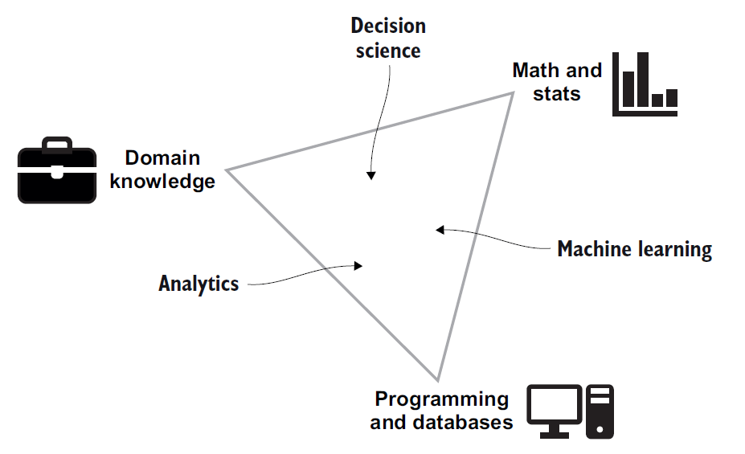

This course introduces students to the principles and tools of data science. This course will provide a foundation for properly collecting and analyzing data to draw insights and to answer data-driven questions. The course has three main components: applied probability and statistics, data analysis and visualization, and machine learning. In the first component students will be introduced to the fundamentals of applied probability and statistics, learn how to interpret randomness, and how to assess predictive uncertainty. Students will then learn how to handle, clean, process, and visualize data of varying types using Python. Finally, the students will be introduced to the basics of machine learning to build predictive models. Students will further learn how to assess model validity and how to interpret the quality of model predictions.
Instructor: Jason Pacheco, GS 724, Email: pachecoj@cs.arizona.edu TA: Enfa Rose George: enfageorge@email.arizona.edu TA: Saiful Islam Salim saifulislam@email.arizona.edu Office Hours: Enfa, Mondays, 10:30 - 11:30, Gould-Simpson Rm 934, Desk #6 (Hybrid) Saiful, Tuesdays, 10:00 - 11:00, Gould-Simpson Rm 942 (Hybrid) Jason, Wednesdays, 10:00 - 11:00, (Zoom) D2L: https://d2l.arizona.edu/d2l/home/1072117 Piazza: https://piazza.com/arizona/fall2021/csc380 Instructor Homepage: http://www.pachecoj.com
| Date | Topic | Readings | Assignment |
|---|---|---|---|
| 8/24 | Introduction + Course Overview (slides) |
What is Data Science? Robinson, E. and Nolis, J. |
|
| 8/26 | Random Events and Probability (slides) | WL : CH1 | |
| 8/31 | Discrete Probability Distributions + numpy.random (slides) | WL : CH2 | HW1 (Due: 9/9) |
| 9/2 | Continuous Probability, PDFs (slides) | ||
| 9/7 | Moments and Dependence (slides) | WL : CH3 | |
| 9/9 | Introduction to Classical Statistics (slides) | WL : Sec. 9.1 & 9.2, Sec. 6.3 | HW2 (Due: 9/16) |
| 9/14 | Statistical Inference and Estimation (slides) | WL : Sec. 9.3 - 9.7 | |
| 9/16 | Statistical Inference and Estimation (slides) | WL : Sec. CH 8, Sec. 5.3 & 5.4 | HW3 (Due: 9/23) |
| 9/21 | Bayesian Probability (slides) |
WL : Sec. 11.1-11.4, Sec. 24.1 - 24.2 |
|
| 9/23 | Bayesian Inference and Estimation (slides) | MK : Sec. 5.1 - 5.2.1 | HW4 (Due: 10/3) |
| 9/28 | Introduction to Data Analysis and Visualization (slides) | Watkins : CH 1 | |
| 9/30 | Data Summarization (slides) (Pandas slides) | Watkins : CH 2 |
HW5 (Due: 10/12) (1) Jupyter Notebook (2) Data |
| 10/5 | Data Collection (slides) | Watkins : CH 4 | |
| 10/7 | Data Collection (slides) |
Scribbr: |
|
| 10/12 | Introduction to Machine Learning (slides) | ||
| 10/14 | Midterm Review |
Midterm Exam (Due: 10/19) Available on D2L |
|
| 10/19 | Prediction and Predictive Models (slides) | MK : CH 1.1 - 1.3 | |
| 10/21 | Learning and Training for Predictive Models (slides) | MK : CH 1.4, CH 3.5 | |
| 10/26 | Linear Models: Linear Regression (slides) | MK : CH 7.1 - 7.3 | HW6 (Due: 11/2) |
| 10/28 | Linear Models: Regularized Linear Regression (slides) | MK : 7.5 - 7.6 | |
| 11/2 | Linear Models: Logistic Regression (slides) | MK : CH 8.1 - 8.3 | |
| 11/4 | Linear Models: Logistic Regression (cont'd) (slides) | MK : CH 14.1 - 14.2, 14.4, 14.5 | HW7 (Due: 11/11) |
| 11/9 | Nonlinear Models (slides) | ||
| 11/11 | Veteran's Day / NO CLASS | ||
| 11/16 | Nonlinear Models : Support Vector Machines (slides) | HW8 (Due: 11/23) | |
| 11/18 | Nonlinear Models : Neural Networks (slides) | Youtube : 3blue1Brown : What is a neural network? | |
| 11/23 | Clustering: K-Means (slides) (notes) | Analytics Vidhya | |
| 11/25 | Thanksgiving Recess / NO CLASS | ||
| 11/30 | Clustering: Gaussian Mixture Models (slides) |
Gaussian Mixture Models Explained (Towards Data Science) MK : CH 11.1-11.4.1 |
HW9 (Due: 12/7) |
| 12/2 | Dimensionality Reduction (slides) |
Step-by-step Explanation of PCA PCA : C. Scheidegger MK : 12.2.1, 12.2.3, 12.3 |
|
| 12/7 | Course Wrapup (slides) |
Final Exam (Due: 12/15) (example plots) Available on D2L |
|
| 12/15 | Final Exam Due |